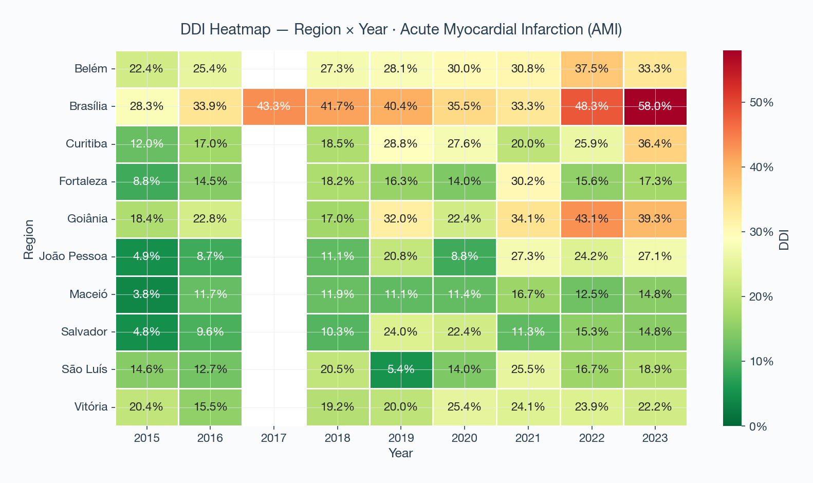
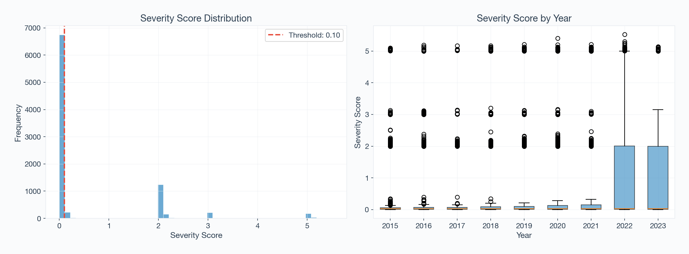
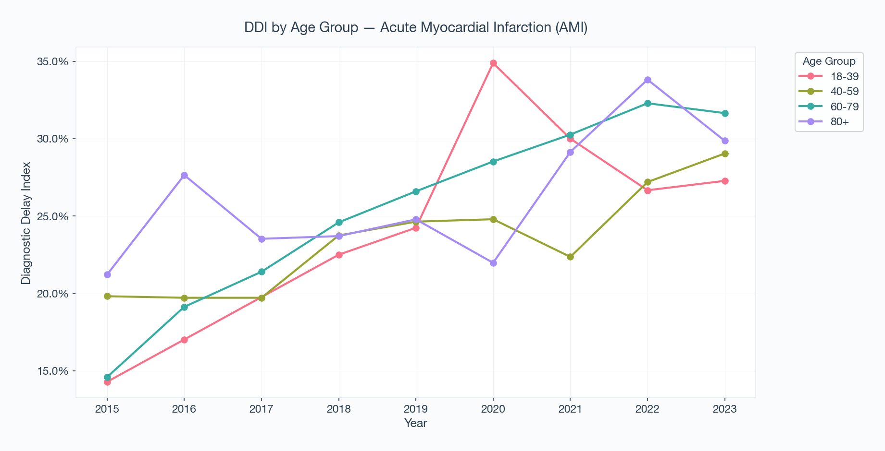

Data-Driven Visual Intelligence
From raw CSV files to publication-ready operational intelligence.

Temporal Degradation Tracking
Monitors highly sensitive operational metrics—DDI, Mortality Rate, ICU utilization, and Average Severity—over multi-year intervals. Integrated with Mann-Kendall tests to prove statistical significance in deterioration patterns.

Spatio-Temporal Hotspots
Instantly identifies regional care deserts. The heatmap cross-references municipalities against temporal progress, pinpointing exactly where public health interventions (like screening campaigns) are failing.

Regional Ranking System
Identifies worst-offending localities for targeted resource reallocation.

Severity Footprint
Visualizes the absolute population shifts across critical severity thresholds.

Demographic Stratification
Evaluates whether diagnostic delay is affecting youth versus elderly populations.